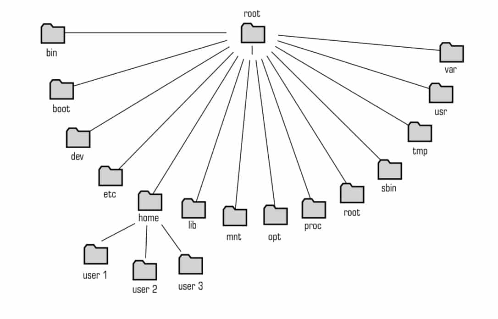

O que é um comando Linux?
Um comando Linux é um programa que você executa diretamente na linha de comando (CLI). Isto é, você digita o comando na CLI e, em seguida, a interface processa aquela instrução e realiza o comando solicitado.
No Linux, os comandos são executados no Terminal — basta pressionar Enter ao terminar de digitar (ou copiar) o comando desejado. Você pode executar comandos para realizar uma série de tarefas, como instalação de pacotes, gerenciamento de usuários e manipulação de arquivos.
As três partes principais de um comando são:
- CommandName (nome). É a regra em si que você quer executar.
- Flag (opção). É um modificador para a operação do comando. Você pode incluí-lo no comando usando um hífen (-) ou dois (–).
- Argument (parâmetro). Serve para adicionar informações ou contexto ao comando.
Comandos mais utilizados
- pwd: encontra o caminho completo do diretório atual
- cd: permite navegar até determinada pasta.
- ls: lista todos os arquivos e pastas dentro de um diretório.
- cat: lista os conteúdos de um arquivo de texto na saída padrão (sdout).
- cp: copia arquivos do diretório atual para uma pasta diferente.
- mv: pode ser usado para mover ou renomear arquivos.
- mkdir: cria um novo diretório.
- rm: remove arquivos e diretórios.
- sudo: executa um comando como superusuário.
- find: para buscar arquivos em diretórios.
Tutorial em Vídeo
No vídeo abaixo, você pode conferir alguns dos 15 comandos Linux mais úteis para iniciantes.
Hierarquia de Diretórios no Linux
A necessidade de guardar informações em objetos que pudessem ser acessados posteriormente de uma forma organizada vem de longe nos sistemas operacionais. Para isso foram criados os sistemas de arquivos. Cada sistema de arquivo mantém uma hierarquia de diretórios que define sua organização e utilidade, e no Linux não é diferente. Basicamente no Linux tudo é um arquivo, que dependendo do seu tipo, pode se tornar um arquivo comum, um diretório, um link, um socket, um condutor, um descritor de dispositivos, etc.
Nos sistemas de arquivos de uma forma geral, os objetos são organizados de uma forma hierárquica e cada objeto possui uma identificação única dentro de uma tabela.
Como exemplo, vejamos o sistema operacional Windows da Microsoft: ele organiza seus arquivos em uma partição nomeada como drive “C:\”, e nela temos o diretório Windows, que contém o sistema operacional; o diretório “Arquivos de Programas”, que contém a maioria dos produtos instalados, e assim por diante. Os arquivos ficam divididos em diretórios e subdiretórios diferentes por uma questão de afinidade e organização. Da mesma maneira temos uma organização no Linux.
Fluxograma para identificar onde você se encontra em determinada etapa do processo com base na hierarquia de diretórios.
Comandos de superusuário (Sudo ou Su)
A conta root é também chamada de super usuário, este é um login que não possui restrições de segurança. A conta root somente deve ser usada para fazer a administração do sistema, e usada o menor tempo possível.
Comandos de Controle e Acesso
- exit: Terminar a sessão;
- logout: Deslogar, ou seja, terminar a sessão atual;
- passwd: Mudar a senha do nosso utilizador (usuário logado);
- rlogin: Logar de forma segura em outro sistema Linux;
- ssh: Sessão segura que nos permite logar num servidor remoto.
Comandos de Comunicações
- mail: Enviar e receber emails;
- mesg: Permitir ou negar mensagens de terminal e pedidos de conversação;
- pine: Outra forma de enviar e receber emails, uma ferramenta rápida e prática;
- talk: Falar com outros utilizadores que estejam logados no momento;
- write: Escrever para outros utilizadores que estejam logados no momento.
Comandos de Ajuda e Documentação
- apropos: Localiza comandos por pesquisa de palavra-chave;
- info: Abre o explorador de informações;
- man: Manual muito completo;
- whatis: Descreve o que um determinado comando é/faz;
- whereis: Localizar a página de ajuda (man page), código fonte, ou arquivos binários, de um determinado programa.;
Comandos de Gestão de Arquivos e Directorias
- cd: Mudar de diretório atual, como por exemplo cd diretório, cd .., cd /
- chmod: Mudar a proteção de um arquivo ou diretório, como por exemplo chmod 777, parecido com o attrib do MS-DOS
- chown: Mudar o dono ou grupo de um arquivo ou diretório, vem de change owner
- chgrp: Mudar o grupo de um arquivo ou diretório
- cmp: Compara dois arquivos
- comm: Seleciona ou rejeita linhas comuns a dois arquivos selecionados
- cp: Copia arquivos, como o copy do MS-DOS
- crypt: Encripta ou Descripta arquivos (apenas CCWF)
- diff: Compara o conteúdo de dois arquivos ASCII
- file: Determina o tipo de arquivo
- grep: Procura um arquivo por um padrão, sendo um filtro muito útil e usado, por exemplo um cat a.txt | grep ola irá mostrar-nos apenas as linhas do arquivo a.txt que contenham a palavra “ola”
- gzip: Comprime ou expande arquivo
- ln: Cria um link a um arquivo
- ls: Lista o conteúdo de uma diretório, semelhante ao comando dir no MS-DOS
- lsof: Lista os arquivos abertos, vem de list open files
- mkdir: Cria uma diretório, vem de make directory”
- mv: Move ou renomeia arquivos ou diretórios
- pwd: Mostra-nos o caminho por inteiro da diretório em que nos encontramos em dado momento, ou seja um pathname
- quota: Mostra-nos o uso do disco e os limites
- rm: Apaga arquivos, vem de remove, e é semelhante ao comando del no MS-DOS, é preciso ter cuidado com o comando rm * pois apaga tudo sem confirmação por defeito
- rmdir: Apaga diretório, vem de remove directory
- stat: Mostra o estado de um arquivo, útil para saber por exemplo a hora e data do último acesso ao mesmo
- sync: Faz um flush aos buffers do sistema de arquivos, sincroniza os dados no disco com a memória, ou seja escreve todos os dados presentes nos buffers da memória para o disco
- sort: Ordena, une ou compara texto, podendo ser usado para extrair informações dos arquivos de texto ou mesmo para ordenar dados de outros comandos como por exemplo listar arquivos ordenados pelo nome
- tar: Cria ou extrai arquivos, muito usado como programa de backup ou compressão de arquivos
- tee: Copia o input para um standard output e outros arquivos
- tr: Traduz caracteres
- umask: Muda as proteções de arquivos
- uncompress: Restaura um arquivo comprimido
- uniq: Reporta ou apaga linhas repetidas num arquivo
- wc: Conta linhas, palavras e mesmo caracteres num arquivo